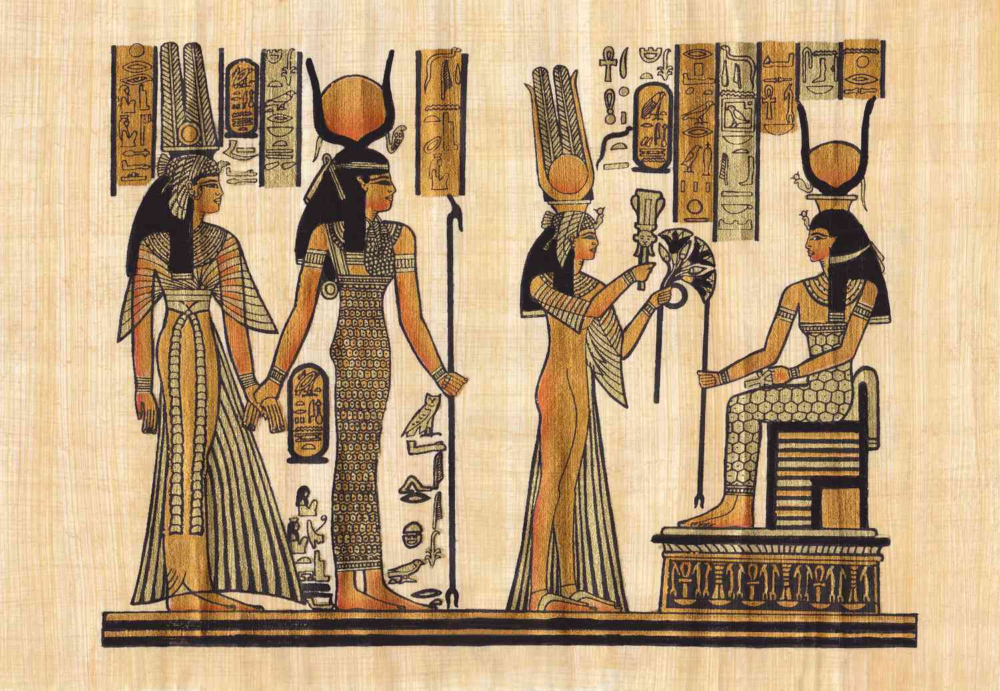
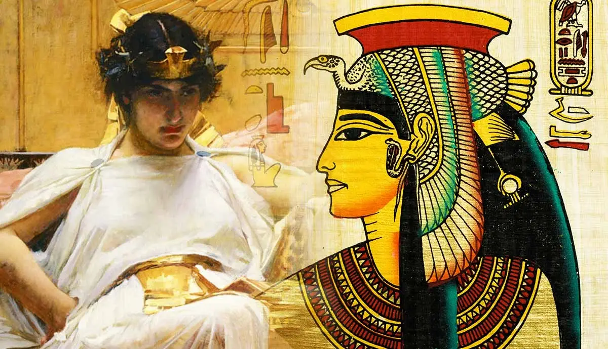
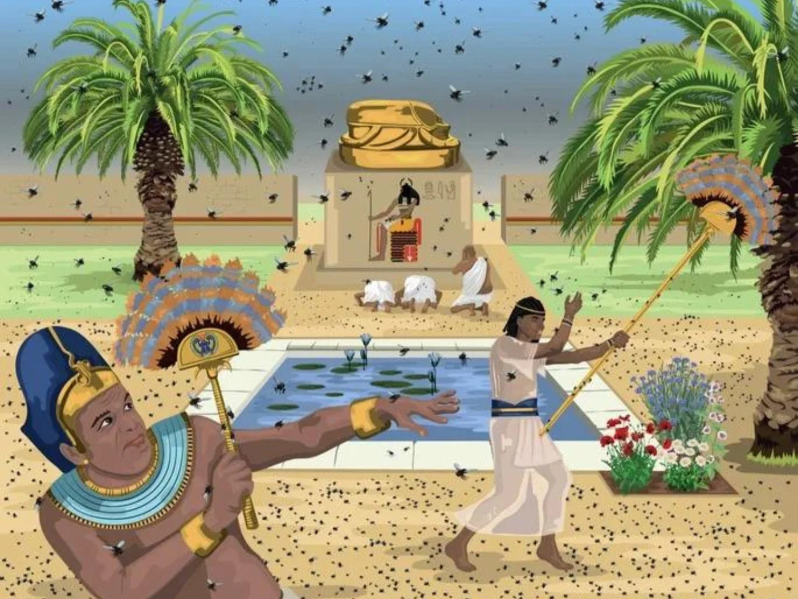
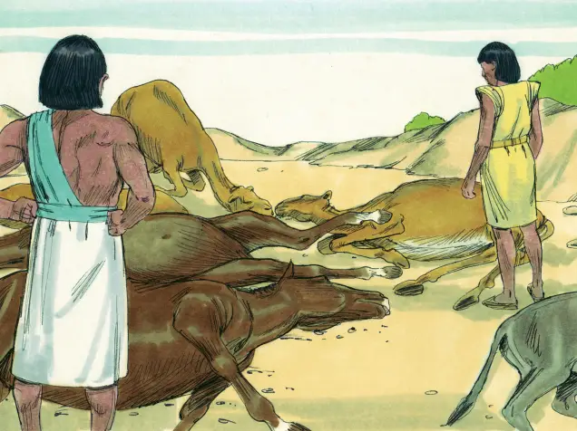
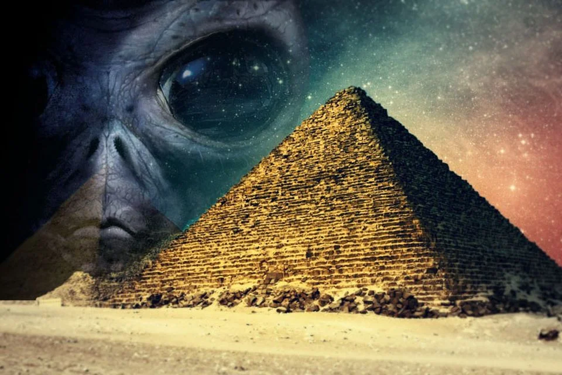
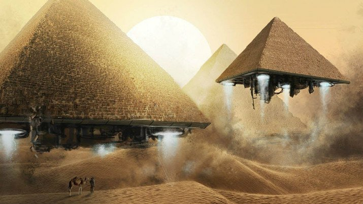
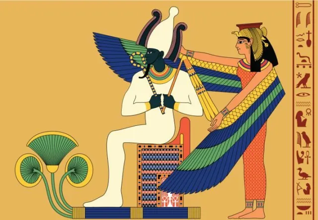
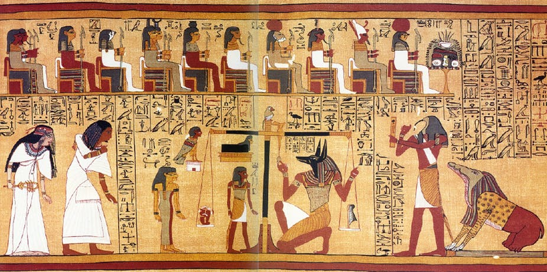

História do Egito
A história do Egito é uma das mais antigas e influentes da humanidade, tendo início por volta de 3.100 a.C., com a unificação do Alto e do Baixo Egito. Desenvolvida às margens do Rio Nilo, essa civilização prosperou graças às cheias do rio, que garantiam terras férteis para a agricultura. Ao longo dos séculos, os egípcios construíram uma sociedade altamente organizada, com avanços significativos na escrita, na medicina e na engenharia. Os faraós governavam como líderes absolutos, sendo considerados representantes dos deuses na Terra. Durante o Antigo, Médio e Novo Império, foram erguidas grandes obras, como templos e pirâmides, que até hoje impressionam o mundo. Com o passar do tempo, o Egito foi conquistado por diferentes povos, incluindo persas e macedônios, sob o comando de Alexandre, o Grande. Após sua morte, o território ficou sob domínio da dinastia ptolomaica, encerrada com o governo de Cleópatra. Com sua queda, o Egito passou a integrar o Império Romano, iniciando uma nova fase de sua história. Séculos depois, foi incorporado ao mundo islâmico e, já na era moderna, tornou-se um país independente. Hoje, o Egito mantém viva sua herança histórica enquanto se desenvolve como uma importante nação contemporânea.
Cleópatra VII foi a última rainha do Egito e uma das figuras mais marcantes da história antiga. Pertencente à dinastia ptolomaica, de origem grega, ela governou em um período de intensas disputas políticas e ameaças externas. Diferente de muitos governantes da época, Cleópatra era conhecida por sua inteligência, habilidade diplomática e domínio de vários idiomas, o que facilitava suas negociações. Para manter o poder e a independência do Egito, ela formou alianças estratégicas com importantes líderes romanos, como Júlio César e Marco Antônio. No entanto, após conflitos com Otaviano, seu reino foi derrotado. Diante da perda de poder e da iminente captura, Cleópatra teria tirado a própria vida, segundo relatos históricos. Sua morte marcou o fim da independência egípcia e o início do domínio romano. Ao longo dos séculos, sua imagem foi retratada de diversas formas, tornando-se símbolo de poder, beleza e inteligência. Até hoje, Cleópatra permanece como uma das personagens mais estudadas e fascinantes da história.


As chamadas pragas do Egito são narrativas presentes em textos religiosos, especialmente na tradição bíblica, e descrevem uma série de acontecimentos que teriam atingido o país como forma de punição divina. Segundo essa tradição, esses eventos ocorreram durante um conflito entre o líder hebreu Moisés e o faraó egípcio, que se recusava a libertar um povo escravizado. Entre as pragas descritas estão fenômenos como a transformação das águas em sangue, invasões de rãs e insetos, doenças, escuridão e outros acontecimentos extremos. Essas narrativas possuem forte significado simbólico, representando a luta entre poder humano e vontade divina. Ao longo do tempo, estudiosos tentaram interpretar esses eventos de diferentes formas, incluindo explicações naturais para alguns dos fenômenos descritos. Ainda assim, seu principal valor está no contexto religioso e cultural, sendo uma das histórias mais conhecidas do mundo. Independentemente da interpretação, as pragas continuam influenciando tradições, crenças e estudos históricos até os dias atuais.


As pirâmides do Egito, especialmente as de Gizé, sempre despertaram curiosidade e fascínio, o que levou ao surgimento de diversas teorias conspiratórias ao longo do tempo. Algumas dessas teorias sugerem que sua construção teria envolvido conhecimentos avançados demais para a época ou até mesmo a participação de civilizações extraterrestres. Outros acreditam na existência de tecnologias perdidas ou segredos ocultos nas estruturas. Essas ideias ganharam popularidade devido à precisão das construções, ao tamanho monumental das pirâmides e ao alinhamento com elementos astronômicos. No entanto, estudos arqueológicos e históricos apresentam explicações baseadas em evidências concretas, como o uso de ferramentas simples, organização de mão de obra e técnicas de engenharia adaptadas à época. Escavações e registros indicam que milhares de trabalhadores participaram dessas construções de forma planejada. Apesar disso, as teorias conspiratórias continuam populares, alimentando documentários, livros e discussões. Esse interesse mostra como as pirâmides ainda exercem grande impacto na imaginação das pessoas. No fim, elas permanecem como um dos maiores legados da civilização egípcia.


Uma das histórias mais conhecidas da mitologia egípcia é o julgamento das almas após a morte, que envolvia o deus Osíris. Segundo a crença, após morrer, a alma do indivíduo era conduzida até um tribunal no mundo espiritual. Nesse julgamento, o coração da pessoa era colocado em uma balança e comparado com uma pena, símbolo da verdade e da justiça. Se o coração fosse mais leve ou equilibrado, significava que a pessoa teve uma vida justa e poderia seguir para a vida após a morte. Caso contrário, sua alma seria devorada por uma criatura mítica, representando o fim de sua existência. Esse processo refletia a importância da ética e do comportamento em vida para os egípcios. A ideia de julgamento após a morte influenciava diretamente as atitudes da sociedade. Além disso, reforçava a crença em um mundo espiritual organizado e justo. Essa narrativa mostra como religião e moral estavam profundamente conectadas no Egito antigo.

